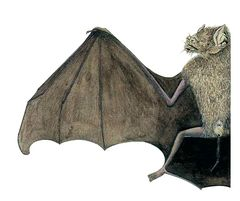
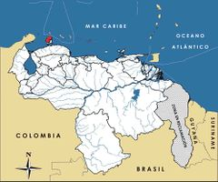

Pteronotus paraguanensis
| Murciélago bigotudo de Paraguaná | |
|---|---|
|  | |
| Riesgo de extinción | |
 En peligro (UICN) | |
| Clasificación científica | |
| Reino: | Animalia |
| Filo: | Chordata |
| Clase: | Mammalia |
| Orden: | Chiroptera |
| Familia: | Mormoopidae |
| Género: | Pteronotus |
| Especie: | Pteronotus paraguanensis |
| Nombre binomial | |
|
Pteronotus paraguanensis Linares et Ojasti, 1974 | |
| Distribución | |
|
 Mapa de distribución de Pteronotus paraguanensis | |
Contenido
Información de Evaluación
- Categoría y Criterio Regional: En Peligro B1ab(iii)
- Fecha de Evaluación Regional: 2015
- Evaluadores: Jesús Morales-Campos y Ariany García-Rawlins
- Categoría y Criterio Global: En Peligro B1ab(iii)
Justificación
Evaluaciones Previas
1999: No Evaluado (NE)
2008: En Peligro (EN)
Información General
Nombres comunes
Murciélago bigotudo de Paraguaná, Paraguana moustached bat.
Notas taxonómicas
Sinónimos
Descripción
Murciélago cavernícola, estrictamente insectívoro, de interés económico pues su dieta está compuesta en 62% por insectos perjudiciales para la agricultura (Molinari et al. 2012). Es de tamaño pequeño, y su cuerpo apenas alcanza entre 5,8 y 6,8 cm, con una fina cola que mide entre 1,9 y 2,3 cm y sobresale de la superficie dorsal del uropatagio. El antebrazo mide entre 5,3 y 5,6 cm (Linares y Ojasti 1974, Gutiérrez, E. E. y Molinari 2008, Molinari et al. 2012). Tiene orejas alargadas y puntiagudas. Presenta unos bigotes muy largos. El labio inferior muestra un pliegue ancho y numerosas protuberancias redondeadas pequeñas. Su coloración dorsal es parda pálida y la ventral es grisácea (Molinari et al. 2012). Posee un sistema de ecolocalización de frecuencia constante adaptado para cazar insectos en ambientes de bosque (Schnitzler y Kalko 1998, Gutiérrez, E. E. y Molinari 2008). Aunque antes fue considerado como la subespecie Pteronotus parnellii paraguanensis (Linares y Ojasti 1974), un estudio morfométrico concluyó que esta forma bien diferenciada debe ser reconocida como una especie plena (Gutiérrez, E. E. y Molinari 2008). Difiere de su congénere del resto del país, Pteronotus parnellii, por su tamaño corporal marcadamente menor, y sus proporciones craneanas y pelaje mucho más pálido (Gutiérrez, E. E. y Molinari 2008, Molinari et al. 2012).
Distribución
Pteronotus paraguanensis es endémica de la península de Paraguaná, estado Falcón, Venezuela. Sus únicos refugios diurnos conocidos son tres cavernas ubicadas en ambientes xerofíticos de la zona (Gutiérrez, E. E. y Molinari 2008, Molinari et al. 2012).
- Sistema: Terrestre
- Bioregión:
- Intervalo altitudinal (m): 50-120
- Endémica: Sí
Situación
No se han realizado estudios específicos con relación al tamaño poblacional de la especie ni sobre su posible declinación. Se considera amenazada por poseer un área de distribución probablemente muy inferior a 5000 km2, por habitar solo tres cavernas, por la disminución continua de la extensión de su hábitat durante los últimos veinticinco años, y por los altos índices de mortalidad registrados como consecuencia de actos vandálicos contra las cavernas que habita (Gutiérrez, E. E. y Molinari 2008, Molinari et al. 2012). A nivel internacional se considera En Peligro Crítico (IUCN 2014).
- EOO (km2): <100
- AOO (km2): <5000
- Tendencia Poblacional: Decreciendo
Amenazas
Se observa un impacto antrópico negativo sobre los bosques de la península de Paraguaná, en particular en las partes bajas del Cerro Santa Ana, y en la fila de Monte Cano y bosques circundantes (Molinari et al. 2012). Pese a que en la península de Paraguaná no hay especies hematófagas (vampiros), durante varios años han ocurrido actos vandálicos en contra de los murciélagos en las cuevas del Guano y de El Pico, los mismos han consistido en la quema de neumáticos y leña en la entrada de las cuevas. Este hecho es grave porque además de suceder de forma repetida, ha ocasionado una mortalidad sustancial en las poblaciones, tanto de esta especie como de otros murciélagos cavernícolas también útiles para la sociedad (Gutiérrez, E. E. y Molinari 2008, Molinari et al. 2012).
Conservación
La especie ha sido beneficiada con la creación del Santuario de Fauna Silvestre Cuevas de Paraguaná (decreto Nº 6138, publicado el 5 de junio de 2008 en la Gaceta Oficial Nº 38.946). Esta área bajo régimen de administración especial está conformada por tres amplias cavernas (Guano, Piedra Honda y El Pico), una pequeña gruta (cueva de Jacuque), y los alrededores de las mismas. La fue creada para proteger los refugios diurnos de las seis especies de murciélagos cavernícolas presentes en Paraguaná, favoreciendo su conservación y perpetuando los beneficios (control de insectos plaga, polinización y dispersión de semillas de las plantas nativas) que ellas aportan a los pobladores de la península (Delfín et al. 2011, Molinari et al. 2012). Los bosques de Paraguaná están protegidos de forma parcial por el monumento natural Cerro Santa Ana, que cubre 1911 ha, y por la Reserva Biológica Montecano (establecida en 1986, protegida por la Junta Comunal de San José de Cocodite y la Universidad Francisco de Miranda), que cubre 1600 ha. Sin embargo, el Santuario de Fauna Silvestre Cuevas de Paraguaná, el monumento natural Cerro Santa Ana y la Reserva Biológica Montecano conjuntamente ocupan unos 35 km2, por lo cual protegen apenas 1,4% de la superficie emergida de la península. Este valor es siete veces menor que el porcentaje mínimo (10%) recomendado para cada región ecológica con características únicas del mundo por el Convenio sobre Diversidad Biológica, del cual Venezuela es signataria desde 1992, y 25 veces menor que el porcentaje (34%) del territorio del país ocupado por áreas bajo régimen de administración especial (Molinari et al. 2012).
Autorías
Autores originales
Jesús Molinari
Colaboradores
Ilustrador
Josu Calvo / Especie similar: Pteronotus parnellii (LC)
Referencias
- Delfín, P., Ochoa, Y. y Castillo, A. (2011). Santuario de Fauna Silvestre Cuevas de Paraguaná, Venezuela: Lineamientos técnicos para su diseño. Terra 27(41): 13-45.
- Gutiérrez, E. E. y Molinari, J. (2008). Morphometrics and taxonomy of bats of the genus Pteronotus (subgenus Phyllodia) in Venezuela. Journal of Mammalogy 89: 292-305.
- IUCN (2014). The IUCN Red List of Threatened Species. Version 2014.3. Accesible en www.iucnredlist.org.
- Linares, O. J. y Ojasti, J. (1974). Una nueva subespecie del murciélago Pteronotus parnellii, en las cuevas de la península de Paraguaná, Venezuela (Chiroptera: Mormoopidae). Boletín de la Sociedad Venezolana de Espeleología 5: 73-78.
- Molinari, J. (2015). Murciélago bigotudo de Paraguaná, Pteronotus paraguanensis. En: J.P. Rodríguez, A. García-Rawlins y F. Rojas-Suárez (eds.) Libro Rojo de la Fauna Venezolana. Cuarta edición. Provita y Fundación Empresas Polar, Caracas, Venezuela. Recuperado de: animalesamenazados.provita.org.ve/content/murcielago-bigotudo-de-paraguana Jue, 01/03/2018 - 12:44
- Molinari, J., Nassar, J. M., García-Rawlins, A. y Márquez, R. J. (2012). Singularidad biológica e importancia socioeconómica de los murciélagos cavernícolas de la Península de Paraguaná, Venezuela, con propuestas para su conservación. Revista de Ecología Latinoamericana 17: 1-40.
- Rodríguez, J. P. y Rojas-Suárez, F. (1999). Libro Rojo de la Fauna Venezolana, segunda edición. PROVITA, Fundación Polar. Caracas. 444 pp.
- Rodríguez, J. P. y Rojas-Suárez, F. (Eds.) (2008). Libro Rojo de la Fauna Venezolana, tercera edición. Provita y Shell Venezuela, S. A. Caracas, Venezuela. 364 pp.
- Schnitzler, H. U. y Kalko, E. K. V. (1998). How echolocating bats search and find food. Páginas: 183-196. En: Kunz, T. H. y Racey, P. A. (Eds.). Bats: phylogeny, morphology, echolocation, and conservation biology. Smithsonian Institution Press. Washington, D. C., USA.